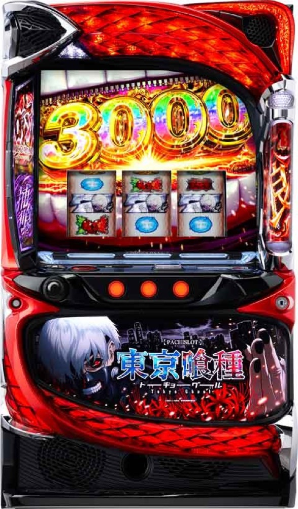

L 東京喰種
レミニセンスを突破し、有馬貴将JUDGEMENTへ。
- 導入
- 2025年2月
- メーカー
- スパイキー
- 分類
- パチスロ
主要スペック
全国の大型ホールで主力設置される人気スマスロ。CZからAT『東京喰種咬』、BITESや特化ゾーンを経て上位CZを目指す流れを簡易体験できます。
- 設定1のCZ約1/262.6、AT初当り約1/394.4
- 約31G/50枚・コイン単価約4.1円
- 上位CZ『有馬貴将JUDGEMENT』成功期待度約61%
L 東京喰種の見どころと計算条件
全国の大型ホールで主力設置される人気スマスロ。CZからAT『東京喰種咬』、BITESや特化ゾーンを経て上位CZを目指す流れを簡易体験できます。
スマスロ 東京喰種を数字で早分かり
レミニセンスから東京喰種咬、CCGの死神までの流れと、設定ごとの結果差を固定レートで比較できます。
CZ・AT・上位CZを段階で見る
通常時からレミニセンス、AT『東京喰種咬』、BITES、有馬貴将JUDGEMENT、CCGの死神へ進む流れを一つの結果にまとめています。どの段階で終了したかを抽選履歴から追えます。
全小役、内部状態、モード、有利区間、演出法則は省略しています。上位到達までの難しさと、到達後の獲得枚数の違いを理解するための簡易モデルです。
設定1〜6のCZ・AT初当り
設定1はCZ約1/262.6・AT約1/394.4、設定6はCZ約1/203.7・AT約1/261.3です。START時に設定1〜6を均等抽選し、選ばれた設定の公開値と出玉率を使います。
設定差が確認できないBITESや上位CZの抽選率は全設定共通です。高設定ほど上位へ優遇されるという独自の推測は加えていません。
平均G・コイン単価・収支
設定1のAT初当り394.4Gと31G/50枚を基準にした平均投資目安は約13,800円です。46枚貸し・5.2枚交換で、投資・換金・収支を固定条件から表示します。
コイン単価4.1円は現金投資額ではなく、吸い込みと出玉の振れやすさを見る指標です。平均より早いATでも出玉が伸びない場合や、深い投資から上位で戻す場合があります。
結果画面で確認するポイント
- 抽選設定とCZ・AT初当りGの関係
- BITESの上乗せが差枚へ与える影響
- 有馬貴将JUDGEMENT成功前後の収支差
- 19,000枚到達時のコンプリート表示
平均Gと投資目安の計算
掲載する東京喰種咬初当り約1/394.4は設定1基準です。当サイトでは50枚あたり31G、1,000円46枚貸しの固定条件から、設定1基準の平均投資目安を約13,800円と計算します。
シミュレーターでは設定1〜6を均等抽選します。設定1〜6で公開されている初当り値を個別に使います。公開されていない特化ゾーン・上位到達率の設定差は加えません。 換金は5.2枚交換で固定し、結果とランキングに設定を表示します。
シミュレーション結果の見方
当るまでレミニセンス・東京喰種咬までのゲーム数
設定設定1・2・3・4・5・6から抽選された今回の設定
上位到達有馬貴将JUDGEMENTとCCGの死神への到達
最終収支差枚と5.2枚交換の収支目安
結果は自動で「マイ記録」に保存され、同じ機種を何回試したか、最高収支、勝率をあとから確認できます。
簡易シミュレーターについて
レミニセンス・東京喰種咬・CCGの死神の流れを固定条件で体験できます。JavaScriptを有効にすると、この位置にシミュレーター、演出、マイ記録、機種別ランキングが表示されます。
結果は娯楽・確率理解のための参考表示です。金銭的価値や交換価値はなく、実際の勝敗や収支を保証しません。18歳未満の方の利用はお控えください。
スマスロ 東京喰種のよくある質問
スマスロ 東京喰種はどんな台？
全国の大型ホールで主力設置される人気スマスロ。 設定1のCZ約1/262.6、AT初当り約1/394.4が主な確認ポイントです。
スマスロ 東京喰種の平均投資目安は？
設定1基準の東京喰種咬初当り約1/394.4と、50枚あたり31G・46枚貸しの固定条件から、平均13,800円を目安として表示します。実際の設定や遊技状況で結果は変わります。
設定とゲームの流れはどう抽選する？
開始時に設定1・2・3・4・5・6から1つを均等抽選し、レミニセンス、東京喰種咬、有馬貴将JUDGEMENT、CCGの死神の順で到達を判定します。設定は最終結果とランキングに表示します。
収支はどう計算する？
1,000円46枚貸し・5.2枚交換の固定条件で投資、換金、収支目安を計算します。実店舗の再プレイ、持ちメダル、端数処理は含みません。